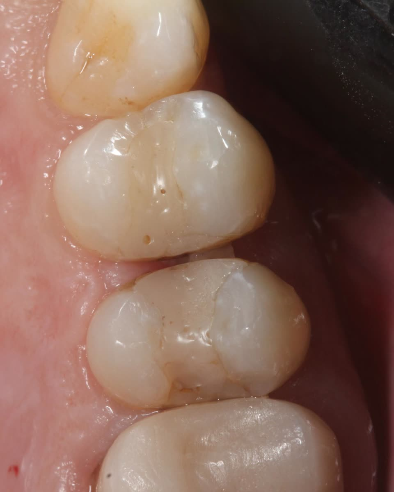
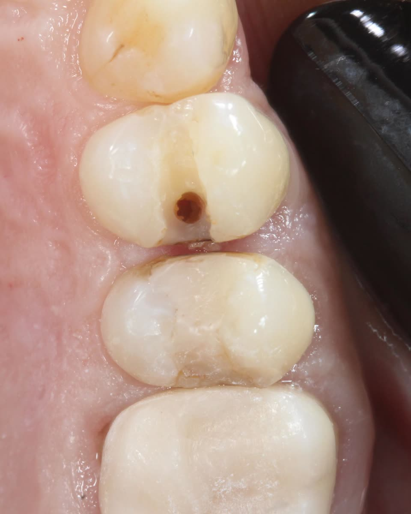
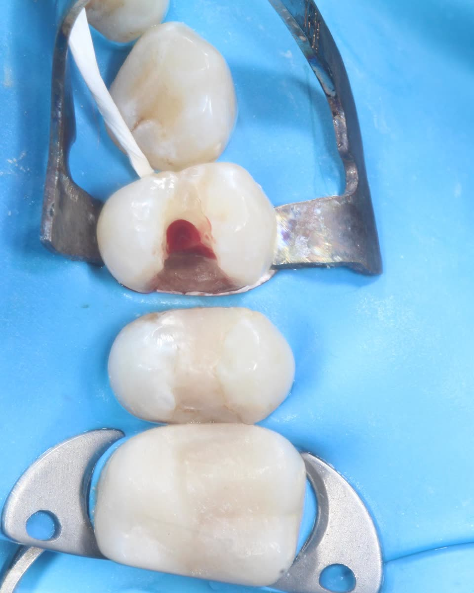
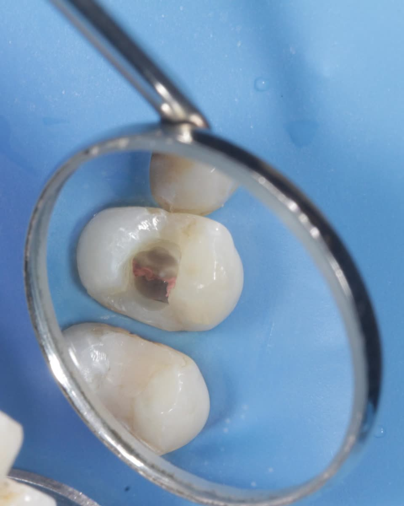
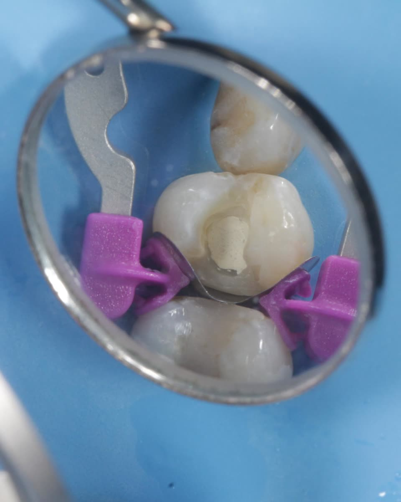
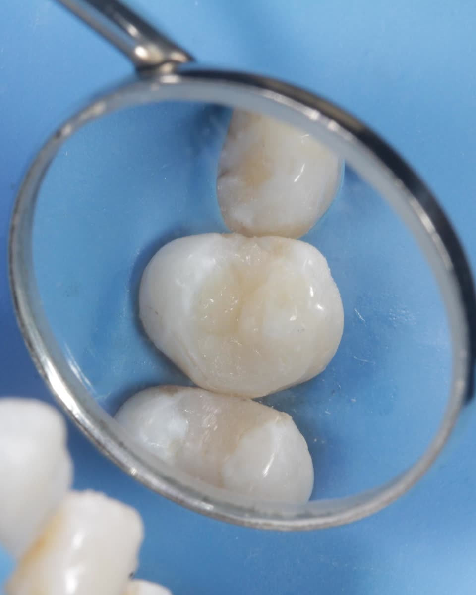

Caso 01 · Novembro de 2026
O que essa linha escondia?
A restauração antiga não encostava no dente vizinho (sem ponto de contato) e tinha a borda mal adaptada. Por essa fresta, a cárie entrou por baixo, sem aparecer.
Quando chegou, a cárie já estava muito profunda, na altura do osso, e o dente tinha indicação de extração. Ao abrir, a exposição do nervo foi grande e o sangramento não foi controlado: o caminho foi o tratamento de canal. A entrada do canal foi selada com Cotosol, um selador, e a restauração em resina foi feita por cima, devolvendo o contato com o vizinho.

01 Sem contatoA borda mal adaptada deixou a cárie entrar por baixo. 
02 De pertoA linha escura na restauração antiga. 
03 Isolamento absolutoLençol de borracha antes de abrir. A cárie chegou ao nervo. 
04 CanalPara manter o dente na boca. 
05 Selar e refazer a paredeCotosol, matriz e anel interproximal. 
06 ResultadoPonto de contato de volta. O dente continua na boca.
Antes de extrair, vale uma segunda opinião.
Cada caso é avaliado de forma individual, e nem todo dente com indicação de extração tem esse caminho. Só a avaliação mostra o que é possível no seu caso.
Agendar avaliaçãoDr. Pedro Zucoloto · CRO-ES 12314 · Imagens publicadas com autorização do paciente.